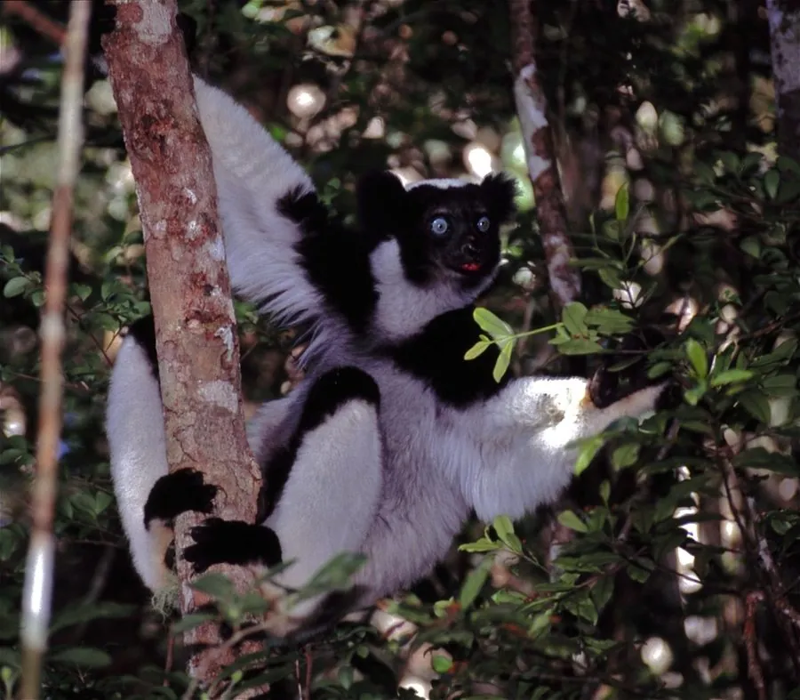

哺乳动物 · 动物界
大狐猴 Indri indri

现存体型最大的狐猴，黑白相间的毛色、几乎退化的短尾与响彻雨林的高亢合唱，使它成为马达加斯加的标志性灵长类。
- 分类
- 门脊索动物门纲哺乳纲目灵长目科大狐猴科属大狐猴属
- 栖息环境
- 马达加斯加东部低地至中山热带雨林，树冠层茂密区域
- 地理分布
- 马达加斯加东部沿海雨林带
- 保护级别
- IUCN 极危（CR）；CITES 附录Ⅰ
物种志
大狐猴体长 64–72 cm，体重 6–9.5 kg，尾极短，仅约 5 cm，是现存最大的狐猴。全身以黑白两色为主，头部、肩背和四肢多为黑色，面部、颈部与四肢外侧有大块白斑，毛色组合因个体而异；后肢强壮，站立时姿态挺拔。
它们仅分布于马达加斯加东部的低地至中山热带雨林，白天在树冠层活动，以树叶、嫩芽、花和果实为食，消化系统适于处理大量叶片。家庭群通常由一对配偶及后代组成，清晨常发出响亮而有节奏的合唱，声音可传出约 2 km。妊娠期约 4–5 个月，每胎一仔，繁殖间隔较长。栖息地丧失与碎片化使种群持续下降，被列为极危物种。
形态与习性
- 食性树叶、嫩芽、花与果实
- 体长64–72 cm，尾极短，约 5 cm
- 体重约 6–9.5 kg
- 寿命野外约 20 年
- 繁殖妊娠期约 4–5 个月，每胎一仔
- 鸣叫清晨群体合唱，声音可传出约 2 km
趣味知识
- 大狐猴是现存体型最大的狐猴，站立时身高可达约 70 cm。
- 它的尾巴几乎完全退化，这在狐猴类中十分少见。
- 大狐猴的合唱常由成年雌性领唱，是划定领域和联络家庭成员的重要方式。